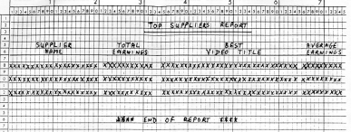

Introduction
The manager of Metropolis Videos was so pleased with your Video Stock File Maintenance and Report system that he has asked you to write the Top Suppliers Report program detailed below. The report must show the top three Suppliers (by total video earnings) and for each of the top three the most popular video title (by average earnings) in their inventory must be shown.
Files
The system data resides on three master files.
Video Details File (VDF.DAT)
The Video Details file contains details relating
to each individual video copy. It is an indexed file with the following record
description.
|
Field |
Key type |
Type |
Length |
Value |
Video-Number |
Primary |
X |
5 |
A0000-Z9999 |
Video-Code |
Alt with Duplicates |
9 |
5 |
00001-99999 |
Rental-Earnings |
-- |
9 |
6 |
0-9999.99 |
Purchase-Price |
-- |
9 |
5 |
0-999.99 |
Video File (VIDEO.DAT)
The Video-File contains information pertinent to
each video title in the library. It is an indexed file with the
following record description.
|
Field |
Key type |
Type |
Length |
Value |
Video-Code |
Primary |
9 |
5 |
00001-99999 |
Video-Title |
--- |
X |
30 |
- |
Supplier-Code |
Alt with Duplicates |
9 |
2 |
01-99 |
Supplier File (SUPPLIER.DAT)
The Video-File contains details of video
suppliers. It is a Relative File. The Supplier Code represents the relative
record number.
|
Field |
Type |
Length |
Value |
Supplier-Code |
9 |
2 |
01-99 |
Supplier-Name |
X |
20 |
- |
Supplier-Address |
X |
60 |
- |
Report Description
The report must show the top three Suppliers and the total video earnings for each supplier. For each of the top suppliers, their most popular video title and its average earnings (Total earnings / Number of copies) must be shown . The total earnings for a video title may be obtained by summing the Rental-Earnings for each copy of the video.
Print Specification
All money values should be printed using floating dollar signs and should have commas and decimal points inserted as appropriate. The report should be printed as shown in the print layout chart below.

Click to see the full size version
{kind=link}